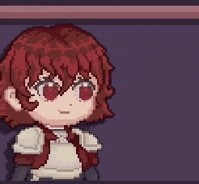
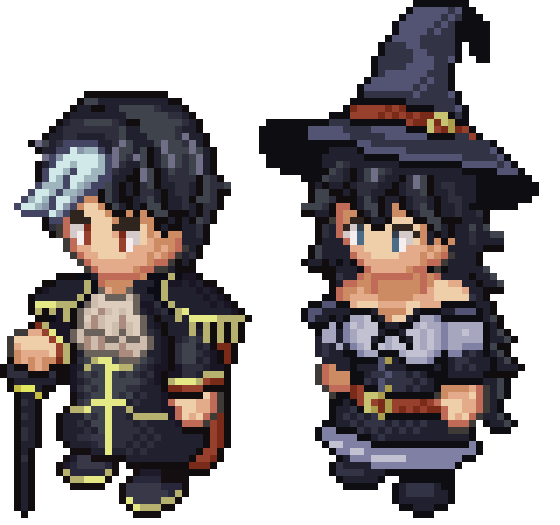

Narrative Design
The Stardew Valley style player-centric calendar with freeform progression works well for a cozy atmosphere, but it wouldn't portray the other characters as ones with their own lives, nor as ones you're relying on as much as they're relying on you. I needed a structure that gradually introduces the complexity of the system while maintaining narrative momentum and stakes, and also allowing for failure without frustration.
Structure
While I still want to maintain a calendar system, I've opted to have the narrative revolve around story arcs. A good comparison is the Persona games that still utilize their calendar system, but build up towards a deadline in which the player must overcome a gameplay challenge relevant to the current arc in the story.
An arc like a raid on the settlement would provide you with structured goals. You would need your fighter and medic at certain levels to overcome it, for example. Still, I had some issues with it. You either had to design those challenges as being very easily beatable unless you're trying to fail (like in Persona), or they would be frustrating. I opted to think of a way to have the player fail forward, and what I came up with was a time loop narrative structure.
Introduction
The game's tutorial is the guildmaster teaching you to fry an egg. Most players will just pick the recipe, press "cook" and move on, making a basic hard fried egg. The guildmaster will approve, though mentioning they happen to personally like over-easy eggs. They'll give the player another egg, and inform them that if they press up then down while cooking certain meals, they can flip them, and if they press space, they can end cooking early in the visible timing windows.
The day ends, but the night is interrupted. An assassin attacks, the fighter is taken by surprise and is unable to save you. You loop back to the tutorial. The guildmaster doesn't seem to immediately believe the outlandish story if you opt to tell it then and there, but says they'll keep it in mind.
Now the player can apply their knowledge: if they cook the over-easy egg immediately, they gain bonus relationship points and unique dialogue. That night, your warning thwarts the assassination, the guildmaster and fighter believe you since you've demonstrated impossible knowledge. This teaches the core loop in the first five minutes. Knowledge persists across loops, and paying attention to preferences matters.
Also, as a useful easter egg, if someone starts a new save and cooks an over-easy egg from the get-go despite not being told how to, they're given a dialogue option to skip this first loop- they've clearly gone through it already!
Progression
The goal is to make failed attempts diagnostic rather than punishing. The first loop sets a precedent that sometimes you might have to fail to know how to proceed. If you over-level the fighter but neglect the medic, you stop the raid but the assassin's poison kills the fighter anyway. The loop resets, you discuss with guildmates, they give you information about what you need to prioritize.
Your culinary inspiration and recipe knowledge persist, so each loop makes you stronger while teaching you the systems' interdependencies. Players who struggle spend more loops building culinary progression, naturally catching up to those comfortable enough with the system to end up on the correct path the first time around intuitively.
As a developer-side benefit to this structure, the game's first arc can release as a vertical slice with future arcs dropping in content updates. Since the player character is the key to the time loop, it makes sense they'd be restricted to just a mess hall for the first arc!
Character Arcs
These story arcs are character-focused. Players should feel like their cooking, dialogue and leveling decisions affect characters' growth, but I can't write entirely separate storylines for every possible outcome. The solution is to design character arcs around a core philosophical tension that maps to mechanical and dialogue decisions players are already making. The arc's conclusion reflects those accumulated choices through small but meaningful splits that provide a mechanical and narrative difference persisting across loops.
Example: Rosetta's Arc
Rosetta is the fighter, a noble from Eudaina (a nation valuing arts and magic) who funded the settlement expedition but doesn't quite fit aristocratic life. Her family possesses a "Generational Arte," a unique inherited magic made stronger by being known by as few as possible. Rosetta has poor control over hers. Currently she can only summon a single sword.
The first arc's assassin uses the appearance of Rosetta's childhood friend, catching her off guard during the attack. Through investigation, players discover her friend is actually leading the raiders. He cut ties with Rosetta years ago as his family's wealth deteriorated, eventually becoming a thief who resents nobility.
Should Rosetta embrace her inheritance to protect those she cares about, or make an effort to succeed on personal strength and tenacity alone?
The player influences Rosetta's path through cooking choices and leveling decisions. Feeding her lavish meals triggers dialogue where she questions whether it's acceptable to indulge in noble comforts. Your response adds points towards one outcome. How heavily you level Rosetta affects the amount of points for either outcome in the final battle.

Inheritance Path: Rosetta believes that refusing her advantages doesn't help anyone. In the final confrontation, she properly wields her arte, summoning and commanding additional swords. This makes Rosetta more powerful mechanically, but in a future arc where her friend is redeemable and recruitable as another fighter, he's weaker and obtaining him is more challenging. This also gives her a preference for lavish meals.
Tenacity Path: Rosetta refuses to rely on her inherited power, proving herself through hard-won skill. This requires significantly higher leveling to succeed in the raid. Rosetta doesn't gain any buff from her Arte going forwards, but when her friend is redeemed and recruited, he becomes more powerful and the two gain synergy bonuses when working together. This also gives her a distaste for lavish meals.
The variation is meaningful but contained. Both paths maintain Rosetta's core characterization and reach the same narrative beats. The difference is how she reaches those beats and what strengths she develops. Players feel agency because their cooking and leveling choices shaped her growth, but I'm not writing two entirely separate storylines.
Worldbuilding
I design nations, factions, and cultures around internal tensions that create natural story hooks and character conflicts. When building a faction, I start with a core tension or duality that makes perfect adherence to its ideals impossible. This creates space for complex characters who struggle with their culture's contradictions rather than simply representing it. These nations also tie into the cooking system through cuisine bonuses and character preferences.
Example: Aphros
Taipan, Focus of the Second Arc, an Aphrosi Lawyer
Aphros is a theocracy built around duality. Their faith holds that good must learn from evil to triumph, and that a complete life requires experiencing both sin and virtue. Of course, they acknowledge that one must ultimately be virtuous, but leaving important tools such as lies and deceit only in the hands of the cruel is to cede a whole life to only them. This faith manifests in their governance through two political factions, Astra & Umbra: Astra handles diplomacy, public culture, and holy warfare, while Umbra manages espionage, sanctioned occultism, and clandestine operations. Both acknowledge each other's roles openly. While publicly, Astra is meant to keep Umbrans from straying too far into sin- and Umbra is meant to seek the necessary evils Astrans may be too careful to attempt... both parties cooperate quite extensively. Astrans can be just as conniving as Umbrans, and Umbrans as kind as Astrans.
Their cultural obsession with duality extends to their cuisine. Aphrosi dishes favor contrasting flavor combinations like sweet and sour or bitter and sweet. Characters from Aphros prefer dishes marked with the "lavish" modifier and alcoholic beverages, as they're staples of the masquerade balls they use to train their spies. The Aphrosi Cuisine chef identity buffs recipes from Aphros while weakening ones from their bordering nation, Eudaina- which is becoming sick with the amount of international incidents that prop up between the two. Aphrosi characters also typically incorporate black and white into their designs!

This worldbuilding creates plot hooks without extra work. The first arc's assassin is a Faceless, a shapeshifting race originating from Aphros. A later arc introduces Aphrosi characters building a nearby settlement, bringing political intrigue and opportunities to cook for guests with specific cultural preferences. Every aspect of the game, from the world, to the characters, to the writing and mechanics are meant to coalesce into creating as interesting a cooking fantasy as possible.